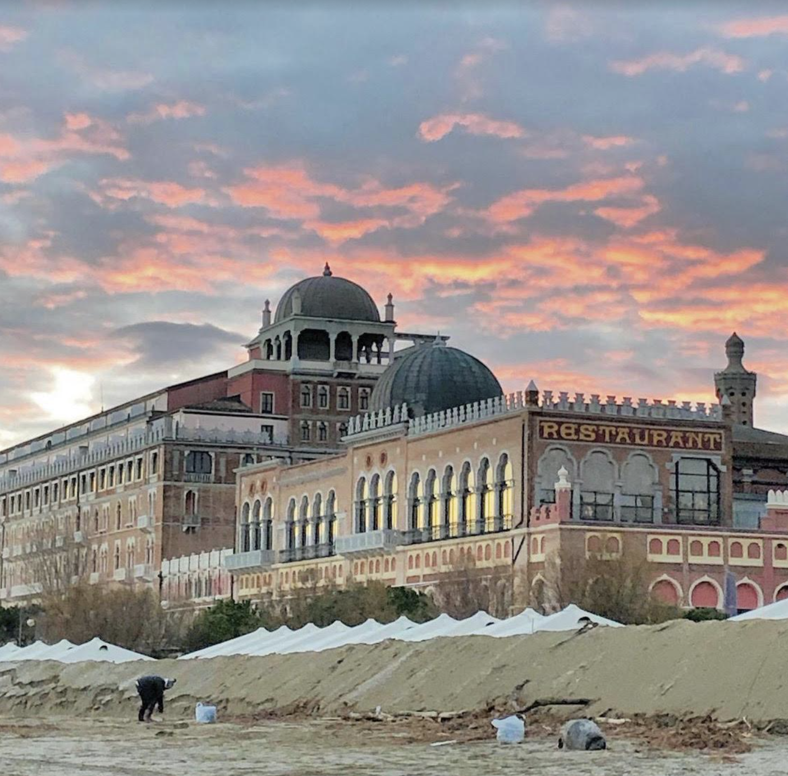
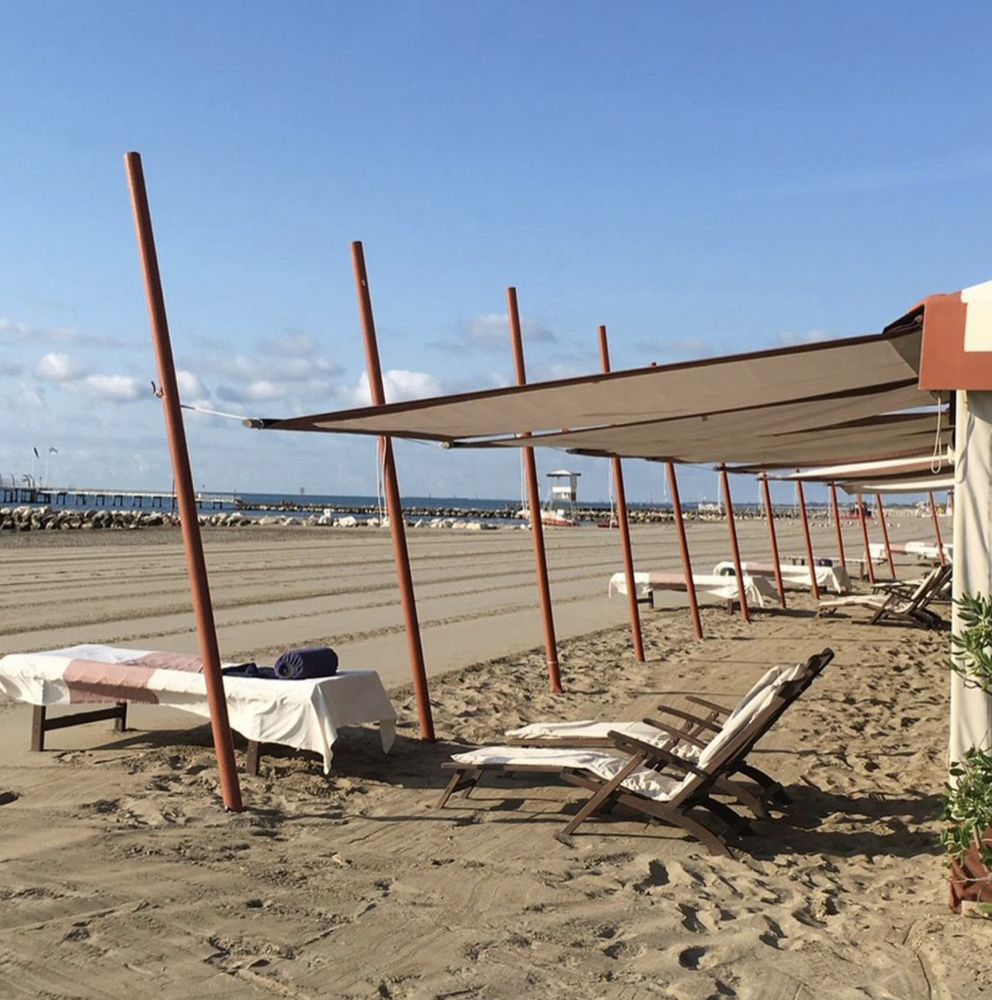
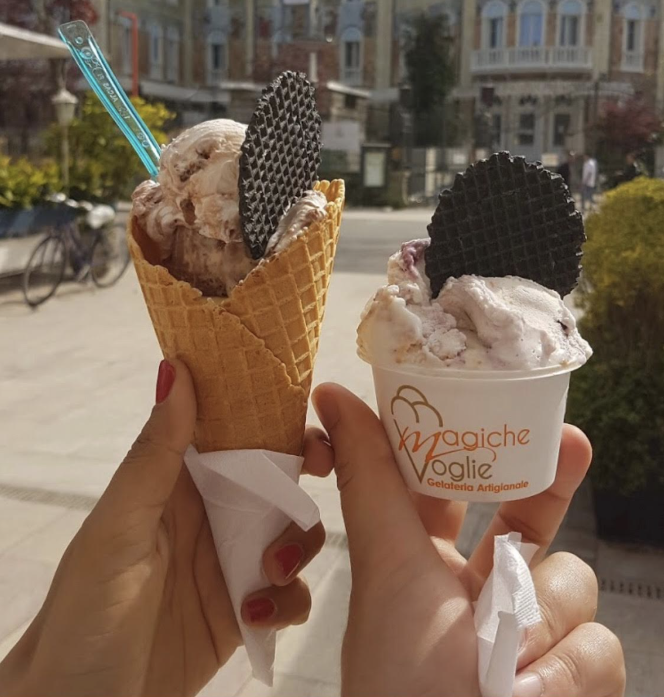
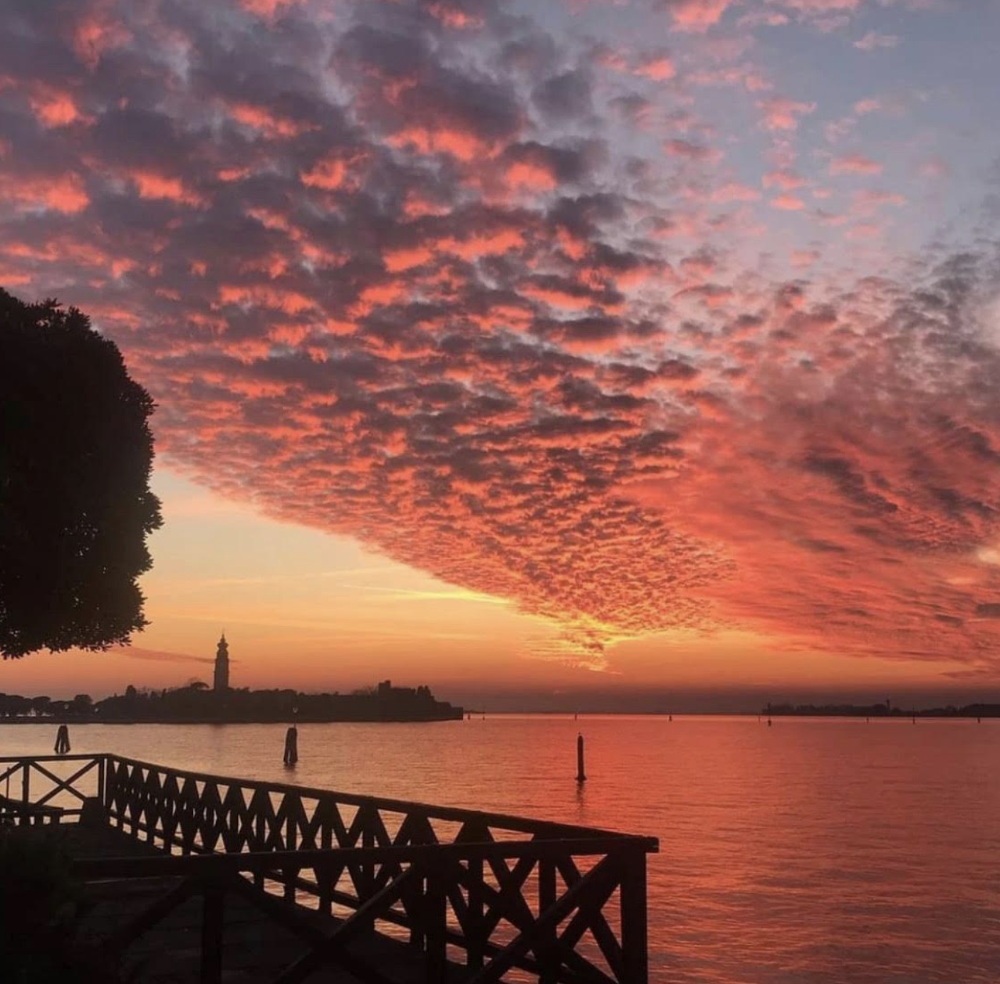

Lido beach is a much more classy beach than Pellestrina. It is located in another islandisola called Lido di Venezia, which is much bigger and posh than Pellestrina.

Lido is where the Venice Cinema Festival takes place. All the beachesspiagge in Venice are private, so you and your cousins had to pay to stay there. Worh it tho.
Your cousins pushed for Lido also because they love - as you do - the homemade icecreamgelato from Magiche Voglie icecream shop, definitely the best in Lido.

As Pellestrina is, also Lido is popular for its super colorful sunsets that have as backgroundsfondo the city of Venice. Unbeatable.

Click on "Final" if you want to continue meeting people and visiting Pellestrina.
Or click "Go back" if you want to relive some island experiences.